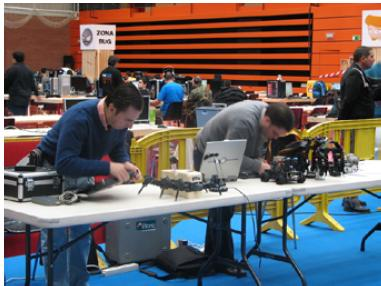
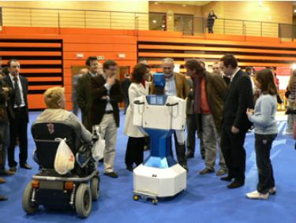

Los días 21,22 y 23 de Diciembre se celebrá en Móstoles Móstoles una pequeña Party, NetZone Móstoles 2007 que una vez más contó con nosotros para darle un toque robótico.
Como la otra vez los dos primeros días estuvimos paseando a SAM que hizo muy buenas amistades con el público. También estuvimos enseñando la Granja de Robots junto con los nuevos mini-proyectos frikis como la Skylamp, Skybot-wii, Pucho con ondas . Esta vez también contamos con el robot CUBE de Juan.

